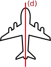

|
Chapitre 13
|
- Symétrie axiale
|
Activité Introduction
Les figures ci-dessous représentent trois étapes successives permettant de construire, par pliage, le symétrique A' de A par rapport à la droite $(d)$.
Sur un papier uni, tracer une droite $(d)$ et placer un point A n'appartenant pas à la droite.

Plier la feuille selon la droite $(d)$ et marqué le point A' par transparence de A de l'autre côté de la page.
Déplier la feuille et tracer le segment [AA'].
- Noter O le point d'intersection entre [AA'] et $(d)$. Quelle est la particularité de ce point vis-à-vis de [AA'] ?
- Que peut-on dire de la droite (AA') et $(d)$
-
Placer un point I sur la droite $(d)$ distinct de O.
- Mesurer [AI] et [A'I]. Que remarque-t-on ?
- En déduire la nature du triangle AIA'.
-
Placer un point B n'appartenant pas à la droite $(d)$.
- En utilisant l'équerre et les propriétés vue précédement pour le segment [AA'], construire B' le symétrique du point B par rapport à la droite $(d)$.
- Tracer [AB] et [A'B'].
- Expliquer l'affirmation suitantes : Une symétrie axiale correspond à ce que l'on retrouve dans un mirroir.
Médiatrice :
Définition :
La médiatrice d'un segment est la droite perpendiculaire à ce segment et qui le coupe en son milieu.
Exemple :

Propriétés :
Propriétés
- Si un point est situé sur la médiatrice d'un segment, alors ce point est équidistant des extrémités de ce segment.
- Si un point est équidistant des extrémités d'un segment, alors ce point appartient à la médiatrice de ce segment.
Exemple :

Construction :
Pour construire une médiatrice, on utilise le compas. .
On construit un
oeil de chat.
- On prend un écartement du compas plus grand que la moitié du segment.
- On pointe sur A et on construit un arc de cercle.
- On pointe sur B et on construit un arc de cercle avec le même écartement que précédement.
- On relie les deux points d'intersections obtenus pour obtenir la médiatrice.
Symétrie axiale :
Définition :
Dire que deux figures sont symétriques par rapport à une droite signifie que, en effectuant un pliage le long de la droite, les figures se superposent.
Remarque :
- Dans une symétrie axiale, l'axe de symétrie est la médiatrice de tous les segments reliant un point et son image.
Propriétés
Lors d'une symétrie axiale les longueurs, les alignements et les angles sont conservés.
Constructions :
A la règle et l'équerre :
Axe de symétrie :
On dit qu'une droite est un axe de symétrie d'une figure lorsque la figure et son symétrique par rapport à cette droite sont confondus.
Exemple :

Le droite (d) est un axe de symétrie de la figure.